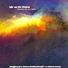

Celtic Lyrics Corner > Artists & Groups > Domhnaill Family > Idir An Dá Sholas > Méilte Cheann Dubhrann
|  | Méilte Cheann Dubhrann |
| Credits : | Traditional; arranged by Maighread Ní Dhomhnaill, Tríona Ní Dhomhnaill & Dónal Lunny |
| Appears On : | Idir An Dá Sholas |
| Language : | Gaeilge (Irish Gaelic) |
| Lyrics : | English Translation : |
| A Mhéilte Cheann Dubhrann | Sandy hills of Ceann Dubhrann |
| Is sibh a thógfadh dom cian | It's you rise in my heart |
| Tráthnóna sa tsamhradh | On a fine summer's evening |
| Nuair a luíos an ghrian | As the sun departs |
| Nach aoibhinn do do chladaigh | How pleasant your strands |
| D'oiche is de ló | By night and by day |
| Is a Mhéilte Cheann Dubhrann | But sand hills of Ceann Dubhrann |
| Céad slan libh go deo | I must bid you farewell |
| Nach sna méilte udaí a chaith mé | 'Twas in those bright hills |
| Seal aoibhinn gan ghruaim | I walked happy and free |
| Ag buachailleacht eallaigh | Herding white geese |
| Fá imeall an chuain | Near the rim of the sea |
| Is ann abogadh mo chliabhán | There I was rocked the cradle |
| Nuair a bhí mé beag óg | While I was a child |
| Is a Mhéilte Cheann Dubhrann | But sand hills of Ceann Dubhrann |
| Céad slan libh go deo | I bid you good-bye |
| Tá néaltaí na maidne | Fair clouds of the morning |
| Ag breacadh sa spéir | Now light up the sky |
| Tá na coiligh ag scairtigh | The cocks, they crow loud |
| Le bánú an lae | With the white dawn of day |
| Tá an soitheach ag fanacht | In the mist a ship waits |
| In imeall an cheo | Away out on the tide |
| Is a Mhéilte Cheann Dubhrann | Sandy hills of Ceann Dubhrann |
| Céad slan libh go deo | I bid you good-bye |
| Nach trua mise amárach | Far out on the deep sea |
| Ag dul idir dhá dtír | Tomorrow I'll be |
| Agus sléibhte na coigríche | 'Neath the high hills of exile |
| Ag cur cumha ar mo chroí | My heart will soon grieve |
| Beidh mo rosca mar shruthán | And down my two cheeks |
| Ag síorshileadh deor | The salt tears will fall |
| Is a Mhéilte Cheann Dubhrann | Sandy hills of Ceann Dubhrann |
| Céad slan libh go deo | I bid you farewell |